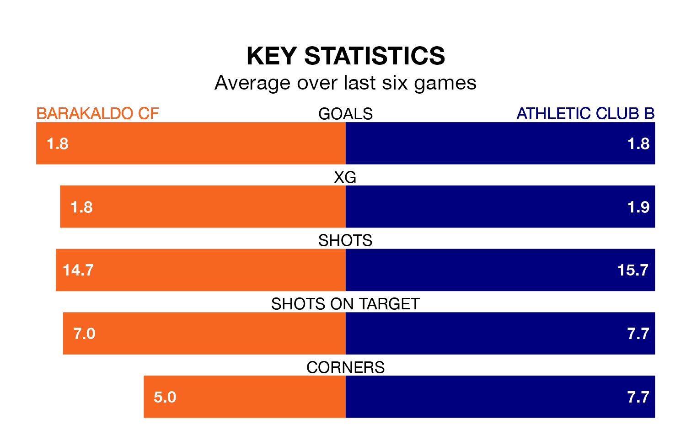

The Segunda División RFEF Group 2's top two sides face each other at the Estadio Nuevo Lasesarre in Sunday's late kick-off, when second-placed Barakaldo CF host Athletic Club B.
Barakaldo have picked up 16 wins and 10 draws from 27 games so far this season, and sit five points below the visitors going into the 5pm match.
Athletic Club B, meanwhile, have won 19 and drawn six, picking up 63 points.
With 50 goals in 27 games so far this season, Athletic Club B are the league's second-highest scorers with 1.9 goals per game. And they are conceding fewer than average, letting in 13 goals at a rate of 0.5 per game.
Barakaldo are also above average scorers, with 1.6 goals per game, compared to a league average of 1.1. They have conceded 0.5 goals per game.
In the last 10 years, Barakaldo and Athletic Club B have played each other on 13 occasions. They won five each, and they drew three times.
On average, Barakaldo scored 0.9 goals and Athletic Club B 1.2 in those matches.
Their last meeting was on November 11, when Athletic Club B won 2-1 at home.
The home side are in good form in the Segunda División RFEF Group 2, with four wins and two draws from their last six games.
With four wins and a draw over that period, the visitors' form is slightly worse – they have taken 13 points from 18, compared to Barakaldo's 14.
Barakaldo's last match was on March 17, a 0-0 draw against UD Logroñés.
Athletic Club B beat Arenas de Getxo 2-1 last time out, on March 16, with Carlos Mattheus Caballero and Urko Iruretagoiena Lertxundi on the scoresheet.
Updated: 10:19 (UTC), 22/03/24